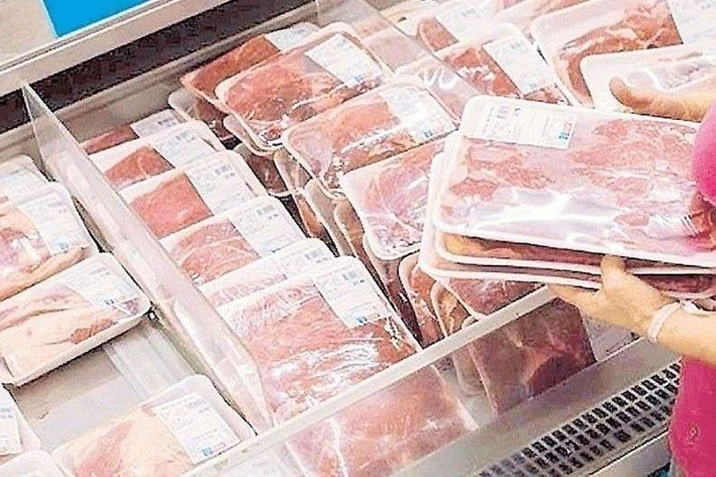
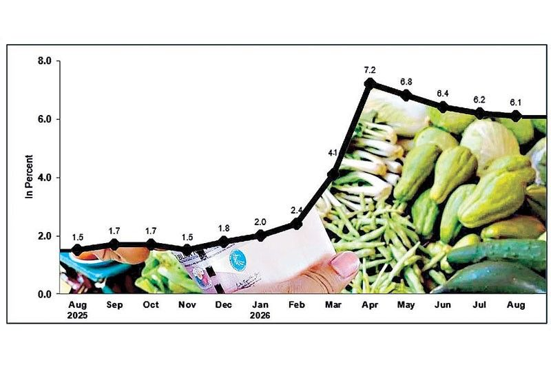
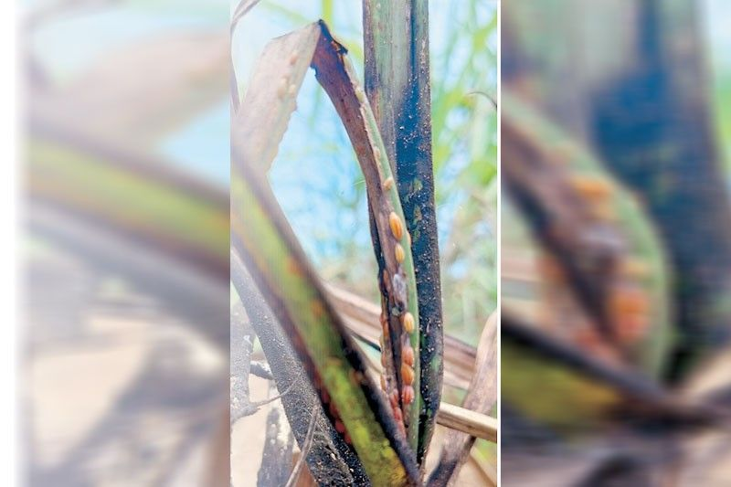
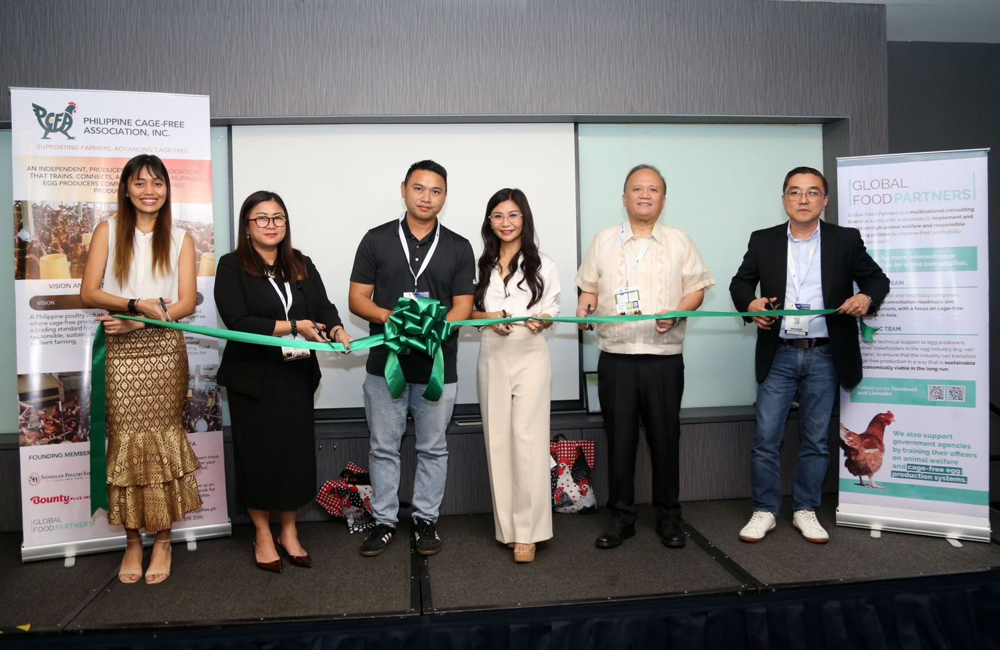

Tape
DA Circular 46 blocks FMD-susceptible meat and live swine/cattle/buffalo from 23 countries — including Vietnam, Malaysia, Cambodia, Jordan — after WOAH reports. Headline inflation 6.1% (five-month low); food 4.6%, but rice inflation 19.4% (hottest since Jul 2024). SRA: 2026–27 sugar crop may fall 10% to 1.66M MT on RSSI; stocks still “safe,” no import window; P25/kg clearance on artificial sweeteners. Philippine Cage-Free Association launches for Horeca demand (Bounty Plus, Kingmerbi, GFP).
For Calamba: the ban is a protein-sourcing map, not a burger panic — check which suppliers pull from the listed origins and lock local or cleared heat-treated product. Rice is the plate tax; veg and fuel cooled August but floods + El Niño can flip September. Sugar: industrial buyers compete for a thinner crop while sweetener rules push demand back to cane. Cage-free is a menu/spec conversation if hotels and QSRs start writing it into RFQs.

DA bans FMD-susceptible meat from 23 countries
5 Sep 2026
Department Circular 46: no FMD-susceptible animals, products, or by-products from Algeria, Burkina Faso, Chad, Comoros, Côte d’Ivoire, Eritrea, Eswatini, Gambia, Guinea, Kenya, Mali, Mozambique, Nigeria, Sierra Leone, Sudan, Tanzania, Tunisia, Uganda, Zambia — plus FMD-susceptible meat from Cambodia, Jordan, Malaysia, and Vietnam. Trigger: WOAH/WAHIS lab-confirmed cases. Prohibited: skeletal muscle meat, casings, tallow, hooves and horns, live swine, cattle, water buffalo. Still allowed: UHT milk and derivatives, heat-treated meat, protein meal (gelatine), lime-treated hides and pelts. Veterinary quarantine at major ports to halt and seize. DA line: keep FMD out of the local herd. Operator read: Vietnam and Malaysia on the list matters more than the African slate for PH foodservice importers. Ask vendors for origin certificates and heat-treat status before next week’s orders — this is a compliance hit, not a headline to ignore.
Open Philstar

Inflation 6.1% — rice still the kitchen tax
5 Sep 2026
PSA (Dennis Mapa): headline inflation 6.1% in August from 6.2% in July — lowest in five months, inside BSP’s 5.5–6.5% band, still far above 1.5% a year ago. Food and non-alcoholic beverages slowed to 4.6% from 5.2%; food alone 4.6% from 5.3%, led by vegetables flipping to −3.4% from +8.4%. Rice went the other way: 19.4% from 17.1% — highest since July 2024 (20.9%). Housing/utilities eased to 7.9% from 8.2%; core 4.1%. Jan–Aug average 5.2%, above the 2–4% target. Mapa: recent floods can push veg back up in September; El Niño later is a price risk. DEPDev’s Balisacan cites Kadiwa (~700 outlets) and free-rice programs; ING’s Bhargava sees upside risk on rice and weather crops, one more 25-bp hike possible in Q4. Kitchen read: the “inflation cooled” banner is not your rice quote. Lock rice through Q1; treat August veg as a gift that weather can take back.
Open Philstar

Sugar crop seen −10%; no import window
4 Sep 2026
SRA administrator Pablo Luis Azcona: early estimate for 2026–27 milling season is 1.66 million MT, down ~10% from 1.85M MT in 2025–26 — second straight decline — as red-striped soft scale (RSSI) keeps hitting cane (first detected 2022; can cut sugar content up to 50%). Mid-milling revise before season end. Stocks (Aug 16): raw 2.18M MT, refined 1.27M MT — “still above our stock level threshold… safe for now,” so no import policy. Parallel squeeze: Sugar Order 5 puts a P25-per-kilo clearance fee and SRA clearance on artificial sweeteners after years of open entry; Azcona puts replaced sweetener volume at ~750–800k MT sugar-equivalent if industry fills the gap with cane. For F&B: thinner crop + sweetener clamp = industrial sugar demand up, not a soft landing. Bake, bev, and dessert cost risk into 2027; this updates Thursday’s “may skip US quota” tape with a number.
Open Philstar

Cage-free eggs get an industry group
4 Sep 2026
FLAG — association launch / trade-show framing. Philippine Cage-Free Association (PCFA) launched Aug 26 at ILDEX Philippines 2026. Founders: Global Food Partners (GFP — exclusive technical partner), Bounty Plus, Kingmerbi Corp., Dominant Asia Livestock Genetics, Sandalan Poultry Farm. Pitch: hotels, restaurants, and foodservice want reliable cage-free supply; producers need training, welfare standards, and buyer links. Bounty Plus AVP Dino Diño: welfare expectations are shifting; the group is a platform to share practice and meet RFQs. GFP has been helping Kingmerbi retrofit barns and manage flocks. Secretariat: Secretariat@cagefree.ph. Operator read: if your hotel or QSR accounts start writing “cage-free” into specs, this is the supply-side response. Cost premium and continuity matter more than the launch photo — ask what volume is actually available in CALABARZON before you print it on a menu.
Open The Chronicle